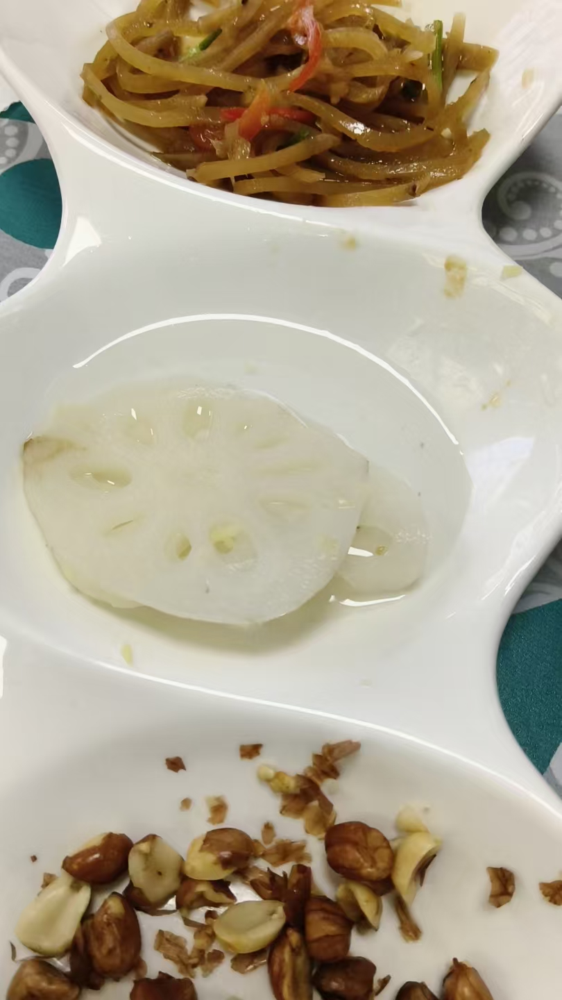
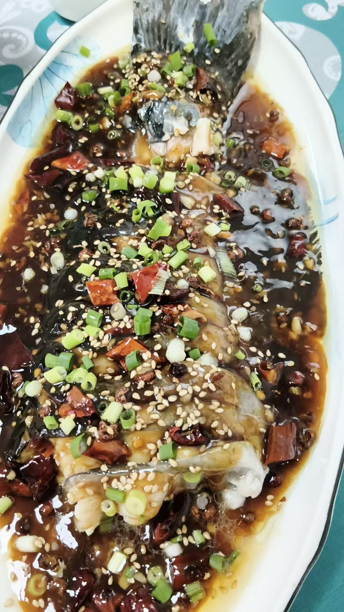
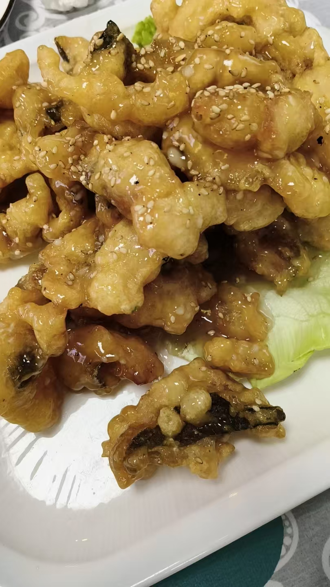

20260812进入肝护卫光球之后，就进入一个光明世界
修炼修行民间文化符咒术法 原始对话记录师父，这个五十三智者是什么意思？
就是善财童子五十三参
每一参一个高人
一共五十三个高人
分别给善财童子演示自己的能力
让善财童子学习
这个视频，就是观极乐世界
观音密咒心法里，对应的是肝
你们的修法里，有没有在肝的光球里看到这样的景象
没有的话，就还没修到位
另外五个部位也有这样的景象，要依次去观
炼心
修光明心
肾，要走进去，看大日如来光明世界
这样才能提取高维世界能量，结舍利子
有实际验证啊
孙储琳不是从药师佛王国搬运回来一个二斤六两的大药丸吗
即使搬不回来实物，一次次去做，光能量还是能取回来的
世界在体内，光能量就在体内
不移一步到西天，
西天就是自己的肝
修炼以后，不是肝能量，而是高维的西天极乐世界，阿弥陀佛佛国能量
随手可得
刚才的视频，就是根据佛说观无量寿经做的视频
进入肝护卫光球之后，就进入一个光明世界
极乐世界
五行大还丹，观音密咒，后期是这样修
总是我说一句，听一句，一个发挥出来的都没有
参悟参悟
参悟其中奥义
不去用心，跟在屁股后边，怎么超脱
肝青，胆绿
肝放出来的光球是藏青跟绿色
绿色又分草绿，青绿，墨绿等
各色金丹各有妙用
嗯，长知识了！
今天学生完成学业，
来符山水库吃全鱼
126七个菜，还送三个小咸菜

味道超乎想象的好
烧鱼骨
鱼头炖豆腐

烧鱼尾
水库鱼，就是活鱼现杀
鲜嫩
潍县大拉皮，吃光了

糖醋鱼条
不移一步到西天，西天就是自己的肝
开头是个提问。"师父，这个五十三智者是什么意思？"
答，就是善财童子五十三参。每一参一个高人，一共五十三个，分别给善财童子演示自己的能力，让善财童子学习。
接着指着一个观极乐世界的视频说，观音密咒心法里，对应的是肝。"你们的修法里，有没有在肝的光球里看到这样的景象。没有的话，就还没修到位。"
另外五个部位也有这样的景象，要依次去观。炼心，修光明心。
"肾，要走进去，看大日如来光明世界，这样才能提取高维世界能量，结舍利子。"
他说有实际验证。孙储琳不是从药师佛王国搬运回来一个二斤六两的大药丸吗。即使搬不回来实物，一次次去做，光能量还是能取回来的。"世界在体内，光能量就在体内。"
一句原话："不移一步到西天，西天就是自己的肝。"又说，修炼以后，就不是肝能量，而是高维的西天极乐世界，阿弥陀佛佛国能量，随手可得。
"进入肝护卫光球之后，就进入一个光明世界。极乐世界。"
颜色也点了。"肝青，胆绿。""肝放出来的光球是藏青跟绿色。"绿色又分草绿、青绿、墨绿等，各色金丹各有妙用。
他嫌学生只跟着听，不发挥。"总是我说一句，听一句，一个发挥出来的都没有。""参悟参悟。""不去用心，跟在屁股后边，怎么超脱。"
末尾换了场景。今天学生完成学业，来符山水库吃全鱼。一百二十六，七个菜，还送三个小咸菜。味道超乎想象的好。烧鱼骨，鱼头炖豆腐，烧鱼尾。水库鱼，就是活鱼现杀，鲜嫩。潍县大拉皮，吃光了。